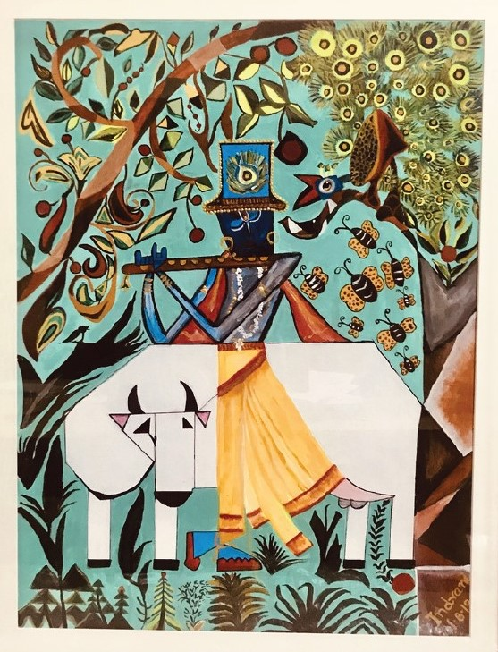

My Union with the Lord
The mighty river flows,
Alongside gentle breeze blows.
Hear the mellifluous call of birds,
Buzzing bees can also be heard.
Deep in the arbour cuckoos coo,
Cows graze while they moo.
Bunches of flowers blooming around,
Their sensuous aroma very profound.
With melodious songs on His lips,
And gentle gait He dances and skips.
Clad in blue, He plays the flute,
With a Heart of Love, He calls for you.
Come my friends, come rushing,
With garlands of jasmine stop blushing.
Our union with The Lord is now imminent,
We stay in His embrace as ever permanent.

A cubism inspired Lord Krishna painted in the months of April & May, 2019